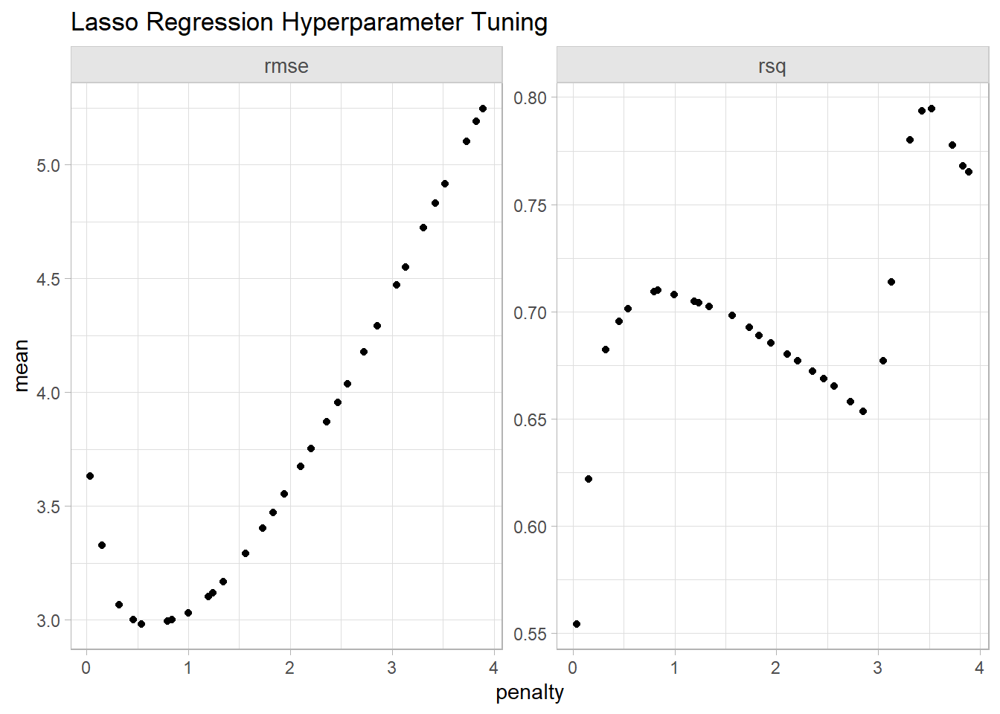
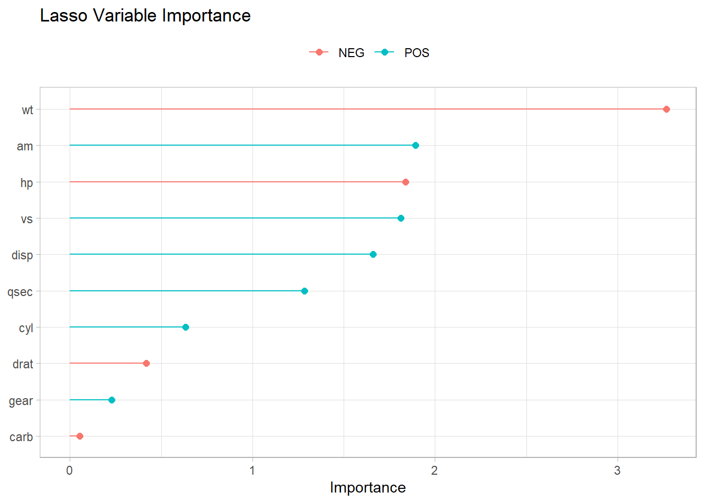

make_sample = function() {
tibble(
x = runif(n = 100, 1, 5),
y = x^3 + rnorm(n = 100, 0, 5)
)
}
sim_dat <- tibble(
sim = seq_len(250),
dat = map(sim, ~ make_sample())
)5 Regularization
Regularization is a set of methods in linear regression that manage the “bias-variance” tradeoff in machine learning. Bias and variance are two types of errors that affect model performance.
Bias is the error introduced by the strong assumptions of an overly simplistic model. High-bias models, like linear models for nonlinear data, tend to under fit, meaning they fail to capture important patterns. This leads to systematic errors when predicting with new data.
Variance is the model’s sensitivity to fluctuations in the training data. High-variance models, like linear models with highly correlated features and deep neural networks, tend to overfit, meaning they capture noise in the data as if it were part of the underlying pattern. High-variance models perform well on training data, but are less reliable on new data.
The tradeoff is that increasing model complexity to decrease predictive bias (expected prediction error) comes at the cost of increasing prediction variance (variance of expected prediction error). Regularization finds the sweet spot that balances the tradeoff.
5.1 Bias-Variance Tradeoff
The linear regression model is \(Y = X \beta + \epsilon\), where \(\epsilon \sim N(0, \sigma^2)\). OLS estimates the coefficients by minimizing the loss function
\[L = \sum_{i = 1}^n \left(y_i - x_i^{'} \hat\beta \right)^2\]
where \(\hat{f} = x_i^{'} \hat\beta\) is the estimator of the true regression function, \(f\).
The resulting estimate for the coefficients is
\[\hat{\beta} = \left(X'X\right)^{-1}\left(X'Y\right).\]
There are two important characteristics of any estimator: bias and its variance. For OLS, these are
\[\text{Bias}(\hat{\beta}) = E(\hat{\beta}) - \beta = 0\]
and
\[\mathbb{V}(\hat{\beta}) = \sigma^2(X'X)^{-1}\]
where the unknown population variance \(\sigma^2\) is estimated from the residuals
\[\hat\sigma^2 = \frac{\epsilon' \epsilon}{n - k}.\]
The OLS estimator is unbiased, but can have a large variance when the predictor variables are highly correlated, or when there are many predictors (notice how \(\hat{\sigma}^2\) increases as \(k \rightarrow n\)). Stepwise selection balances the trade-off by eliminating variables, but this throws away information. Regularization keeps all the predictors, but reduces coefficient magnitudes to reduce variance at the expense of some bias.
We can decompose the expected prediction error (EPE) into a reducible error related to the type of model, and irreducible error related to the variance in \(y\) (noise).
\[ \text{EPE} = \mathbb{E}\left[\left(f(x) - \hat{f}(x)\right)^2\right] + \mathbb{V}[y|x] \]
The reducible error, which is the mean squared error (MSE) of the estimate, can be further decomposed into the estimator bias and variance.
\[ \text{EPE} = \left(f(x) - \mathbb{E}\left[\hat{f}(x)\right]\right)^2 + \mathbb{E}\left[\left(\hat{f}(x) - \mathbb{E}\left[\hat{f}(x)\right]\right)^2\right] + \mathbb{V}[y|x] \]
Illustration. You can see the bias-variance tradeoff by fitting models of increasing complexity to a random data-generating process, \(f(x) = x^3\). Create 250 random samples of \(y = f(x) + e\) where \(x \in [1,5]\) and \(e\) is noise.
Fit four polynomial models of degree 1, 2, 3, and 9. The first two under fit the data. The degree 3 model matches the underlying data-generating process. The degree 9 model over fits. Then fit a fourth model using regularization on the degree 9.
sim_fit <-
sim_dat |>
mutate(
fit_1 = map(dat, ~ linear_reg() |> fit(y ~ poly(x, degree = 1), data = .)),
fit_2 = map(dat, ~ linear_reg() |> fit(y ~ poly(x, degree = 2), data = .)),
fit_3 = map(dat, ~ linear_reg() |> fit(y ~ poly(x, degree = 3), data = .)),
fit_9 = map(dat, ~ linear_reg() |> fit(y ~ poly(x, degree = 9), data = .)),
fit_9a = map(
dat,
~ linear_reg(engine = "glmnet", penalty = 0.2, mixture = 1) |>
fit(y ~ poly(x, degree = 9), data = .))
)We have 5 models, each fitted 250 times to random samples of size 100 points from an \(f(x) = x^3 + \epsilon\) data-generating process. Now use the models predict a single value, \(f(x = 4)\),.
test_dat <- tibble(x = 4)
sim_preds <-
sim_fit |>
mutate(
`1` = map_dbl(fit_1, ~ predict(., new_data = test_dat) |> pull(.pred)),
`2` = map_dbl(fit_2, ~ predict(., new_data = test_dat) |> pull(.pred)),
`3` = map_dbl(fit_3, ~ predict(., new_data = test_dat) |> pull(.pred)),
`9` = map_dbl(fit_9, ~ predict(., new_data = test_dat) |> pull(.pred)),
`9 (LASSO)` = map_dbl(fit_9a, ~ predict(., new_data = test_dat) |> pull(.pred))
)This gives us 250 predictions per model. Check out their distributions. The degree 3 polynomial is the gold standard, and you see both low bias and variance. The degree 1 and 2 polynomials under-fit, resulting in high bias. But at least the variance is small on degree-2 polynomial. The degree 9 model overfits, resulting in low bias, but at the expense of high variance. The regularization model shrunk the variance with only a small increase in bias.
Show the code
sim_preds |>
select(`1`:`9 (LASSO)`) |>
pivot_longer(c(everything())) |>
ggplot(aes(x = name, y = value)) +
geom_hline(yintercept = 4^3, linetype = 2, linewidth = 1, color = "goldenrod") +
geom_boxplot(fill = NA, outlier.shape = NA) +
geom_jitter(height = 0, width = .2, alpha = .2) +
theme(panel.grid = element_blank()) +
labs(
x = "Polynomial Degree", y = "Preds",
title = str_wrap(glue(
"Increasing complexity improves bias at expense of higher variance, ",
"but regularization balances the trade-off"
), 80),
subtitle = "Simulated Predictions from Polynomial Models"
)5.2 Case Study
The following three sections use regularization to fit a model of mpg on the other variables in the mtcars dataset. Set up a train-test split, training with 5-fold CV.
data("mtcars")
glimpse(mtcars)Rows: 32
Columns: 11
$ mpg <dbl> 21.0, 21.0, 22.8, 21.4, 18.7, 18.1, 14.3, 24.4, 22.8, 19.2, 17.8,…
$ cyl <dbl> 6, 6, 4, 6, 8, 6, 8, 4, 4, 6, 6, 8, 8, 8, 8, 8, 8, 4, 4, 4, 4, 8,…
$ disp <dbl> 160.0, 160.0, 108.0, 258.0, 360.0, 225.0, 360.0, 146.7, 140.8, 16…
$ hp <dbl> 110, 110, 93, 110, 175, 105, 245, 62, 95, 123, 123, 180, 180, 180…
$ drat <dbl> 3.90, 3.90, 3.85, 3.08, 3.15, 2.76, 3.21, 3.69, 3.92, 3.92, 3.92,…
$ wt <dbl> 2.620, 2.875, 2.320, 3.215, 3.440, 3.460, 3.570, 3.190, 3.150, 3.…
$ qsec <dbl> 16.46, 17.02, 18.61, 19.44, 17.02, 20.22, 15.84, 20.00, 22.90, 18…
$ vs <dbl> 0, 0, 1, 1, 0, 1, 0, 1, 1, 1, 1, 0, 0, 0, 0, 0, 0, 1, 1, 1, 1, 0,…
$ am <dbl> 1, 1, 1, 0, 0, 0, 0, 0, 0, 0, 0, 0, 0, 0, 0, 0, 0, 1, 1, 1, 0, 0,…
$ gear <dbl> 4, 4, 4, 3, 3, 3, 3, 4, 4, 4, 4, 3, 3, 3, 3, 3, 3, 4, 4, 4, 3, 3,…
$ carb <dbl> 4, 4, 1, 1, 2, 1, 4, 2, 2, 4, 4, 3, 3, 3, 4, 4, 4, 1, 2, 1, 1, 2,…(mt_split <- rsample::initial_split(mtcars))<Training/Testing/Total>
<24/8/32>(mt_folds <- rsample::vfold_cv(
rsample::training(mt_split),
v = 5
))# 5-fold cross-validation
# A tibble: 5 × 2
splits id
<list> <chr>
1 <split [19/5]> Fold1
2 <split [19/5]> Fold2
3 <split [19/5]> Fold3
4 <split [19/5]> Fold4
5 <split [20/4]> Fold55.3 Ridge
Ridge regression estimates the linear model coefficients by minimizing an augmented loss function which includes a term, \(\lambda\), that penalizes the magnitude of the coefficient estimates,
\[L = \sum_{i = 1}^n \left(y_i - x_i^{'} \hat\beta \right)^2 + \lambda \sum_{j=1}^k \hat{\beta}_j^2.\]
The resulting estimate for the coefficients is
\[\hat{\beta} = \left(X'X + \lambda I\right)^{-1}\left(X'Y \right).\]
As \(\lambda \rightarrow 0\), ridge regression approaches OLS. The bias and variance for the ridge estimator are
\[\mathrm{Bias}(\hat{\beta}) = -\lambda \left(X'X + \lambda I \right)^{-1} \beta\] \[\mathbb{V}(\hat{\beta}) = \sigma^2 \left(X'X + \lambda I \right)^{-1}X'X \left(X'X + \lambda I \right)^{-1}\]
Notice how the estimator bias increases with \(\lambda\) while the variance decreases with \(\lambda\). The optimal level for \(\lambda\) is the one that minimizes the root mean squared error (RMSE) or the Akaike or Bayesian Information Criterion (AIC or BIC), or R-squared.
To fit a linear model with ridge regression, specify linear_reg(mixture = 0). Standardize the predictors in the recipe so that each contributes to the model on a similar scale. Otherwise, predictors with larger scales would naturally have larger coefficients.
ridge_mdl <- linear_reg(engine = "glmnet", penalty = tune(), mixture = 0)
ridge_rec <-
recipe(mpg ~ ., data = mtcars) |>
step_normalize(all_numeric_predictors())
ridge_wflow <-
workflow() |>
add_model(ridge_mdl) |>
add_recipe(ridge_rec)
# Set up the hyperparameter space for penalty. Set range through trial and error.
ridge_grid <-
grid_latin_hypercube(
penalty(range = c(0, 10), trans = NULL),
size = 30
)
# tune_grid() returns a resamples object, essentially a tibble with turning
# results for each hyperparameter combination and fold.
ridge_resamples <-
ridge_wflow |>
tune_grid(
resamples = mt_folds,
grid = ridge_grid
)
ridge_resamples |> show_best(metric = "rmse") |> knitr::kable()| penalty | .metric | .estimator | mean | n | std_err | .config |
|---|---|---|---|---|---|---|
| 3.404846 | rmse | standard | 2.788780 | 5 | 0.2770716 | pre0_mod11_post0 |
| 3.097456 | rmse | standard | 2.789068 | 5 | 0.2673171 | pre0_mod10_post0 |
| 2.850770 | rmse | standard | 2.790578 | 5 | 0.2598008 | pre0_mod09_post0 |
| 3.909496 | rmse | standard | 2.791505 | 5 | 0.2937018 | pre0_mod12_post0 |
| 4.047623 | rmse | standard | 2.792769 | 5 | 0.2983149 | pre0_mod13_post0 |
Show the code
ridge_resamples |>
collect_metrics() |>
ggplot(aes(x = penalty, y = mean)) +
geom_point() +
facet_wrap(facets = vars(.metric), scales = "free_y") +
labs(title = "Ridge Regression Hyperparameter Tuning")Finalize the workflow with the optimal hyperparameter setting.
Show the code
# Update the workflow with the optimal hyperparameter values.
ridge_final <-
ridge_wflow |>
finalize_workflow(parameters = select_best(ridge_resamples, metric = "rmse"))
# Refit the model with the optimal hyperparameters using the _full_ training
# dataset (not the folds).
ridge_fit <- ridge_final |> last_fit(mt_split)
# Metrics are evaluated on the testing dataset.
ridge_fit |> collect_metrics() |> knitr::kable()| .metric | .estimator | .estimate | .config |
|---|---|---|---|
| rmse | standard | 2.763867 | pre0_mod0_post0 |
| rsq | standard | 0.855356 | pre0_mod0_post0 |
The most important variables here were am and wt.
Show the code
ridge_final |>
fit(training(mt_split)) |>
pull_workflow_fit() |>
vi() |>
ggplot(aes(x = Importance, y = fct_rev(fct_inorder(Variable)), color = Sign)) +
geom_point(size = 2) +
geom_segment(aes(x = 0, xend = Importance)) +
theme(legend.position = "top") +
labs(
color = NULL, y = NULL,
title = "Ridge Variable Importance"
)5.4 Lasso
Lasso stands for “least absolute shrinkage and selection operator”. Like ridge, lasso adds a penalty for coefficients, but instead of penalizing the sum of squared coefficients (L2 penalty), lasso penalizes the sum of absolute values (L1 penalty). As a result, coefficients can be zeroed under lasso for high values of \(\lambda\).
The loss function for lasso is
\[L = \sum_{i = 1}^n \left(y_i - x_i^{'} \hat\beta \right)^2 + \lambda \sum_{j=1}^k \left| \hat{\beta}_j \right|.\]
To fit a linear model with lasso regression, specify linear_reg(mixture = 1).
lasso_mdl <- linear_reg(engine = "glmnet", penalty = tune(), mixture = 1)
lasso_rec <-
recipe(mpg ~ ., data = mtcars) |>
step_normalize(all_numeric_predictors())
lasso_wflow <-
workflow() |>
add_model(lasso_mdl) |>
add_recipe(lasso_rec)
# Set up the hyperparameter space for penalty. Set range through trial and error.
lasso_grid <-
grid_latin_hypercube(
penalty(range = c(0, 4), trans = NULL),
size = 30
)
# tune_grid() returns a resamples object, essentially a tibble with turning
# results for each hyperparameter combination and fold.
lasso_resamples <-
lasso_wflow |>
tune_grid(
resamples = mt_folds,
grid = lasso_grid
)
lasso_resamples |> show_best(metric = "rmse") |> knitr::kable()| penalty | .metric | .estimator | mean | n | std_err | .config |
|---|---|---|---|---|---|---|
| 0.5413050 | rmse | standard | 2.981694 | 5 | 0.2894492 | pre0_mod05_post0 |
| 0.7986595 | rmse | standard | 2.995669 | 5 | 0.3213003 | pre0_mod06_post0 |
| 0.4564781 | rmse | standard | 2.999863 | 5 | 0.2800068 | pre0_mod04_post0 |
| 0.8388917 | rmse | standard | 3.000056 | 5 | 0.3280254 | pre0_mod07_post0 |
| 0.9981979 | rmse | standard | 3.029067 | 5 | 0.3599114 | pre0_mod08_post0 |
Show the code
lasso_resamples |>
collect_metrics() |>
ggplot(aes(x = penalty, y = mean)) +
geom_point() +
facet_wrap(facets = vars(.metric), scales = "free_y") +
labs(title = "Lasso Regression Hyperparameter Tuning")
Finalize the workflow with the optimal hyperparameter setting.
Show the code
# Update the workflow with the optimal hyperparameter values.
lasso_final <-
lasso_wflow |>
finalize_workflow(parameters = select_best(lasso_resamples, metric = "rmse"))
# Refit the model with the optimal hyperparameters using the _full_ training
# dataset (not the folds).
lasso_fit <- lasso_final |> last_fit(mt_split)
# Metrics are evaluated on the testing dataset.
lasso_fit |> collect_metrics() |> knitr::kable()| .metric | .estimator | .estimate | .config |
|---|---|---|---|
| rmse | standard | 2.8329605 | pre0_mod0_post0 |
| rsq | standard | 0.8325994 | pre0_mod0_post0 |
The most important variables here were am and wt.
Show the code
lasso_final |>
fit(training(mt_split)) |>
pull_workflow_fit() |>
vi() |>
ggplot(aes(x = Importance, y = fct_rev(fct_inorder(Variable)), color = Sign)) +
geom_point(size = 2) +
geom_segment(aes(x = 0, xend = Importance)) +
theme(legend.position = "top") +
labs(
color = NULL, y = NULL,
title = "Lasso Variable Importance"
)
5.5 Elastic Net
Elastic Net combines the penalties of ridge and lasso to get the best of both worlds. The loss function for elastic net is
\[L = \frac{\sum_{i = 1}^n \left(y_i - x_i^{'} \hat\beta \right)^2}{2n} + \lambda \frac{1 - \alpha}{2}\sum_{j=1}^k \hat{\beta}_j^2 + \lambda \alpha\left| \hat{\beta}_j \right|.\]
In this loss function, new parameter \(\alpha\) is a “mixing” parameter that balances the two approaches. If \(\alpha\) is zero, you are back to ridge regression, and if \(\alpha\) is one, you are back to lasso. To fit a linear model with elastic net regression, specify linear_reg(mixture = tune()).
elnet_mdl <- linear_reg(engine = "glmnet", penalty = tune(), mixture = tune())
elnet_rec <-
recipe(mpg ~ ., data = mtcars) |>
step_normalize(all_numeric_predictors())
elnet_wflow <-
workflow() |>
add_model(elnet_mdl) |>
add_recipe(elnet_rec)
# Set up the hyperparameter space for penalty and mixture. Set penalty range
# through trial and error.
elnet_grid <-
grid_latin_hypercube(
penalty(range = c(2, 7), trans = NULL),
mixture(range = c(.1, .8)),
size = 30
)
# tune_grid() returns a resamples object, essentially a tibble with turning
# results for each hyperparameter combination and fold.
elnet_resamples <-
elnet_wflow |>
tune_grid(
resamples = mt_folds,
grid = elnet_grid
)
elnet_resamples |> show_best(metric = "rmse") |> knitr::kable()| penalty | mixture | .metric | .estimator | mean | n | std_err | .config |
|---|---|---|---|---|---|---|---|
| 2.779998 | 0.1278667 | rmse | standard | 2.915133 | 5 | 0.3480151 | pre0_mod05_post0 |
| 4.627069 | 0.1197010 | rmse | standard | 3.018257 | 5 | 0.4692187 | pre0_mod16_post0 |
| 4.483231 | 0.1774956 | rmse | standard | 3.120341 | 5 | 0.5301497 | pre0_mod15_post0 |
| 3.277417 | 0.2850874 | rmse | standard | 3.138914 | 5 | 0.5209350 | pre0_mod08_post0 |
| 3.466345 | 0.3298847 | rmse | standard | 3.228762 | 5 | 0.5701959 | pre0_mod09_post0 |
Show the code
elnet_resamples |>
collect_metrics() |>
filter(.metric == "rmse") |>
ggplot(aes(x = penalty, y = mixture, color = mean)) +
geom_point(size = 2) +
scale_color_gradient(low = "red", high = "blue") +
# facet_wrap(facets = vars(.metric), scales = "free_y") +
labs(title = "Elastic Net Regression Hyperparameter Tuning", color = "rmse")Finalize the workflow with the optimal hyperparameter setting.
# Update the workflow with the optimal hyperparameter values.
elnet_final <-
elnet_wflow |>
finalize_workflow(parameters = select_best(elnet_resamples, metric = "rmse"))
# Refit the model with the optimal hyperparameters using the _full_ training
# dataset (not the folds).
elnet_fit <- elnet_final |> last_fit(mt_split)
# Metrics are evaluated on the testing dataset.
elnet_fit |> collect_metrics() |> knitr::kable()| .metric | .estimator | .estimate | .config |
|---|---|---|---|
| rmse | standard | 2.8684080 | pre0_mod0_post0 |
| rsq | standard | 0.8494803 | pre0_mod0_post0 |
The most important variables here were wt, qsec and disp.
Show the code
elnet_final |>
fit(training(mt_split)) |>
pull_workflow_fit() |>
vi() |>
ggplot(aes(x = Importance, y = fct_rev(fct_inorder(Variable)), color = Sign)) +
geom_point(size = 2) +
geom_segment(aes(x = 0, xend = Importance)) +
theme(legend.position = "top") +
labs(
color = NULL, y = NULL,
title = "Elastic Net Variable Importance"
)Model Summary
Lasso performed best on RMSE and R-squared.
Show the code
bind_rows(
Ridge = collect_metrics(ridge_fit),
Lasso = collect_metrics(lasso_fit),
ElNet = collect_metrics(elnet_fit),
.id = "Model"
) |>
select(Model, .metric, .estimate) |>
pivot_wider(names_from = .metric, values_from = .estimate) |>
knitr::kable()| Model | rmse | rsq |
|---|---|---|
| Ridge | 2.763867 | 0.8553560 |
| Lasso | 2.832960 | 0.8325994 |
| ElNet | 2.868408 | 0.8494803 |
Final thoughts on the models.
- Lasso can set some coefficients to zero, thus performing variable selection.
- Lasso and Ridge address multicollinearity differently: in ridge regression, the coefficients of correlated predictors are similar; In lasso, one of the correlated predictors has a larger coefficient, while the rest are (nearly) zeroed.
- Lasso tends to do well if there are a small number of significant parameters and the others are close to zero. Ridge tends to work well if there are many large parameters of about the same value.
- In practice, you don’t know which will be best, so run cross-validation pick the best.